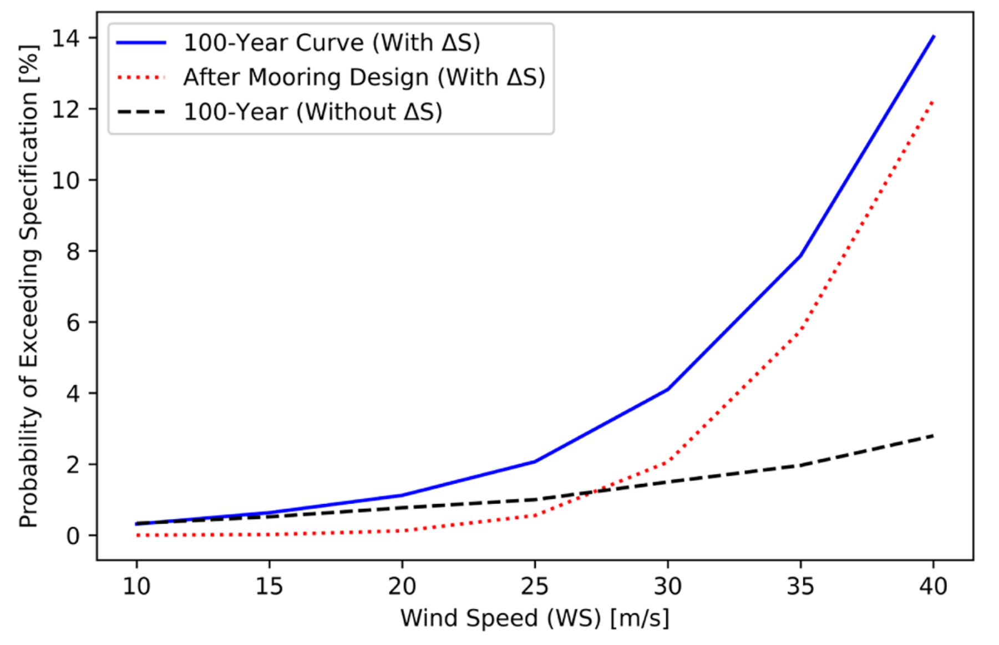

Mooring fragility under hurricane conditions
Hurricane conditions can affect an ocean-current turbine even though the device sits below the sea surface. As winds intensify, the surrounding current may change speed quickly. That change can pull sharply on the mooring lines that hold the turbine in place, even when the current’s final speed is similar to a less demanding case.
We studied how wind conditions relate to ocean-current speed and its short-term changes, then used mechanical simulations to see how the mooring responds. The resulting fragility curves estimate the probability that the modeled loads exceed the mooring system’s operating limits at different wind speeds.
I worked on this NCROEP project on mooring fragility and economic risk from August 2021 to August 2023, supervised by Anderson R. de Queiroz and Mo Gabr. The paper combines my Bayesian modeling work with mechanical simulations developed with Neda Jamaleddin.

Rapid current changes alter estimated vulnerability. The black curve omits the transient effect of current-speed changes. The blue curve includes it using a 100-year environmental limit, while the red curve uses limits from the specified mooring design. These are conditional probabilities of exceeding the modeled operating limits, not observed failure frequencies. De Faria et al. (2024), Figure 10. Source paper.
Linking ocean statistics and structural response
The case study uses roughly 580 days of ocean-current measurements off North Carolina, paired with nearby wind observations. Bayesian models relate wind speed to both the current’s speed and how abruptly it changes, and estimate extreme conditions with a 100-year recurrence interval.
The statistical estimates feed a mechanical model of the RM4 ocean-current turbine’s mooring system in ANSYS AQWA. Simulations compare steady and dynamic loading, specify a mooring design capable of withstanding the selected extreme conditions, and identify its operating limits. Combining those limits with the conditional ocean-current distributions produces fragility curves across wind speeds.
Findings
High winds are associated with changes in current speed. This relationship is stronger in the observations than the relationship between wind speed and current speed alone.
Similar final currents can produce different peak loads. In two simulated cases with nearly equal final current speeds, dynamic mooring-line tension was about 80% higher in the case with the larger velocity increment.
Ignoring dynamics can understate modeled risk. At 40 m/s wind speed, the estimated probability of exceeding operating specifications is about 12–14% when dynamic current variation is included, versus roughly 2–3% when it is omitted.
The fragility curves translate environmental observations into estimates that can inform mooring design and investment-risk analysis. They apply to the studied site and mooring assumptions, with wind speeds limited to 40 m/s by the available observations. The simulations conservatively apply instantaneous current-speed changes because their timing within each ten-minute observation interval is unknown. Changes in current direction and validation at other locations remain areas for further work.
Paper and presentations
2024. Victor Augusto Durães de Faria, Neda Jamaleddin, Anderson Rodrigo de Queiroz, and Mohammed Gabr. Bayesian modeling and mechanical simulations for fragility curve estimation of the mooring system of marine hydrokinetic devices. Applied Ocean Research, 153, 104243.
Read the paper · Mooring and fragility presentation · 2022 research poster (PDF)
The related hurricane capacity expansion project examines how damage risk can affect long-term electricity investments.